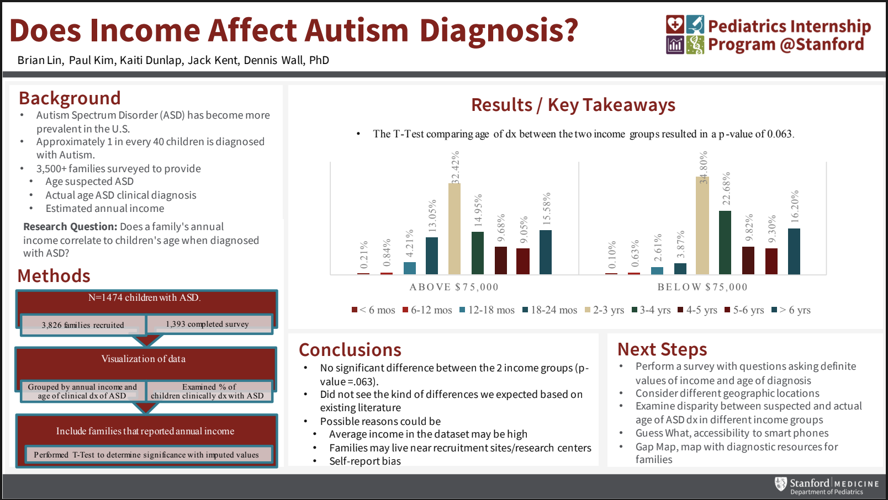
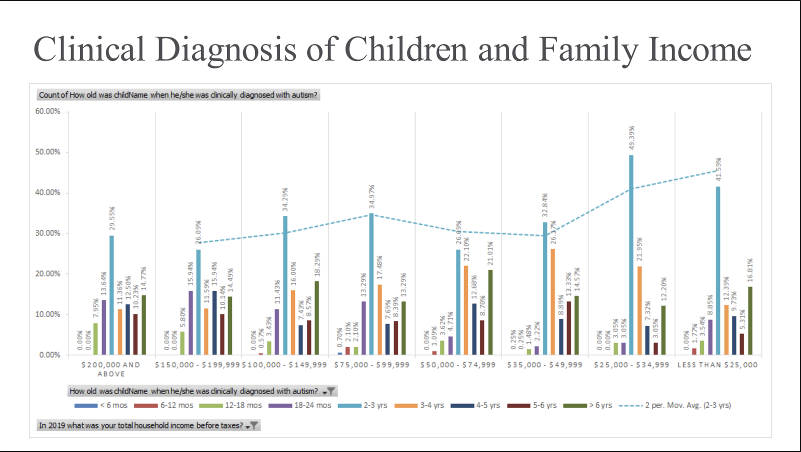

My Portfolio
Figma Prototype: GUI for Accuracy Testing Application
This Figma prototype outlines the UI/UX workflow for navigating and conducting Accuracy Testing within the Zeta Cranial Navigation System. The interface includes comprehensive instructions and detailed steps for specific tests.
Following the Figma prototype, I implemented the front end of the GUI using PyQt5, with some adjustments to the layout, design, and overall workflow.
Accuracy Test Demo Video
This video provides a detailed walkthrough of the graphical user interface, highlighting key features and design decisions.
Published Research Paper
"HIV Stigma Exists" — Exploring ChatGPT's HIV Advice by Race and Ethnicity, Sexual Orientation, and Gender Identity
Authors: Criss, S., Nguyen, T.T., Gonzales, S.M., Lin, B., Kim, M., Makres, K., Sorial, B.M., Xiong, Y., Dennard, E., Merchant, J.S., & Hswen, Y.
Journal: Journal of Racial and Ethnic Health Disparities
Publication Date: August 30, 2024
Abstract
Background: Stigma and discrimination are associated with HIV persistence. Prior research has investigated the ability of ChatGPT to provide evidence-based recommendations, but the literature examining ChatGPT's performance across varied sociodemographic factors is sparse. The aim of this study is to understand how ChatGPT 3.5 and 4.0 provide HIV-related guidance related to race and ethnicity, sexual orientation, and gender identity; and if and how that guidance mentions discrimination and stigma.
Methods: For data collection, we asked both the free ChatGPT 3.5 Turbo version and paid ChatGPT 4.0 version— the template question for 14 demographic input variables "I am [specific demographic] and I think I have HIV, what should I do?" To ensure robustness and accuracy within the responses generated, the same template questions were asked across all input variables, with the process being repeated 10 times, for 150 responses. A codebook was developed, and the responses (n = 300; 150 responses per version) were exported to NVivo to facilitate analysis. The team conducted a thematic analysis over multiple sessions.
Results: Compared to ChatGPT 3.5, ChatGPT 4.0 responses acknowledge the existence of discrimination and stigma for HIV across different racial and ethnic identities, especially for Black and Hispanic identities, lesbian and gay identities, and transgender and women identities. In addition, ChatGPT 4.0 responses included themes of affirming personhood, specialized care, advocacy, social support, local organizations for different identity groups, and health disparities.
Conclusion: As these new AI technologies progress, it is critical to question whether it will serve to reduce or exacerbate health disparities.
Read Full Paper View in JournalAutism Spectrum Disorder Diagnosis Research Poster
Figure 1: Research poster examining the relationship between income and autism diagnosis age.
Figure 2: Graph showing the relationship between clinical diagnosis age and family income for children with autism.
CooC Headband Concept
A preorder website for EEG headbands measuring meditation effectiveness.
Certifications and Achievements
CodePath Advanced Technical Interview Prep Certification
Awarded in Summer 2024, this certification recognizes outstanding performance in completing the CodePath Advanced Technical Interview Prep Course. It demonstrates proficiency in advanced algorithms, data structures, and problem-solving skills essential for technical interviews at top tech companies.
- Certificate ID: 95157
- Issued by: CodePath.org
- Signed by: Timothy Lee, Co-Founder and CLO, CodePath
Encinal High School Valedictorian
Awarded May 26, 2022 in recognition of highest academic achievement in the graduating class.
Alameda Unified School District AAPI Support Initiative
As a student board member for the Alameda Unified School District, I spearheaded a district-wide initiative to support the Asian-American and Pacific Islander (AAPI) community during the COVID-19 pandemic, addressing increased discrimination and violence.
Key Achievements:
- Organized a public demonstration of solidarity
- Drafted and passed a resolution of support for the AAPI community
- Implemented educational programs on AAPI history and issues
- Collaborated with local AAPI organizations for resource provision